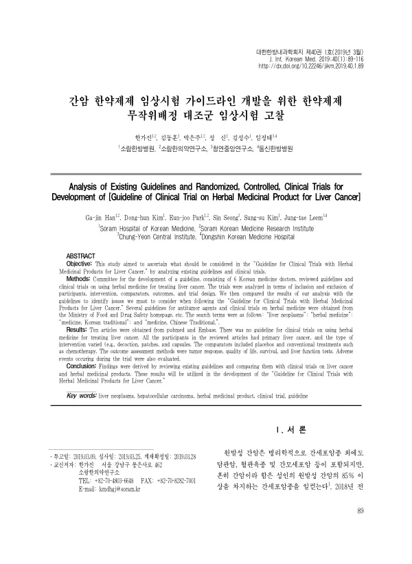

Analysis of Existing Guidelines and Randomized, Controlled, Clinical Trials for Development of [Guideline of Clinical Trial on Herbal Medicinal Product for Liver Cancer]
Han Gj, Kim Dh, Park Ej, Seong S, Kim Ss, Leem Jt
The Journal of Internal Korean Medicine 40(1):89-116

첫 장 · 오픈액세스First page · open access
논문 소개Summary
간암 한약제제 임상시험 가이드라인을 만들기 위해, 기존 가이드라인과 한약 무작위 배정 대조군 임상시험을 견주어 본 연구입니다. 한의사 6인의 개발위원회가 항종양제 가이드라인과 간암 한약 임상시험을 검토했는데, 간암 한약 임상시험을 위한 가이드라인은 없었습니다. 펍메드와 엠베이스에서 10편을 찾아 대상자와 중재, 대조군, 결과지표, 연구설계로 나누어 분석했습니다. 참여자는 모두 원발성 간암 환자였고 중재는 탕약과 첩부제, 캡슐로 다양했으며 대조군에는 위약과 항암화학요법 같은 기존 치료가 들어 있었습니다. 결과지표로는 종양 반응과 삶의 질, 생존, 간기능검사가 쓰였고 시험 중 발생한 이상반응도 평가했습니다.
A study comparing existing guidelines with randomised controlled trials of herbal medicinal products, in order to develop a guideline for clinical trials in liver cancer. A development committee of six Korean medicine doctors reviewed guidelines for antitumour agents and trials of herbal medicine in liver cancer, and found no guideline for such trials. Ten articles were retrieved from PubMed and Embase and analysed by participants, intervention, comparator, outcome and trial design. All participants had primary liver cancer; interventions varied across decoctions, patches and capsules; and comparators included placebo and conventional treatments such as chemotherapy. Outcomes used were tumour response, quality of life, survival and liver function tests, and adverse events occurring during the trials were also assessed.
인용Cite
Han Gj, Kim Dh, Park Ej, Seong S, Kim Ss, Leem Jt. Analysis of Existing Guidelines and Randomized, Controlled, Clinical Trials for Development of [Guideline of Clinical Trial on Herbal Medicinal Product for Liver Cancer]. The Journal of Internal Korean Medicine. 2019;40(1):89-116. doi:10.22246/jikm.2019.40.1.89